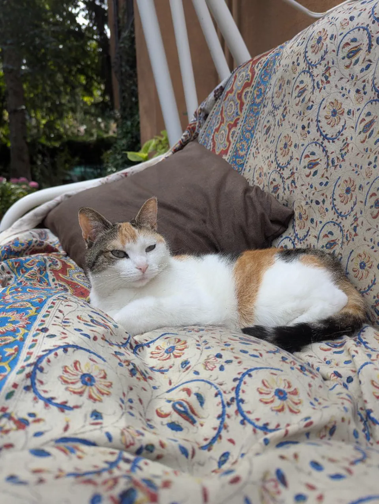

Il gatto ha vomitato sul tappeto?
Su un tappeto persiano o fatto a mano, comincia con pochi gesti delicati. Qui trovi cosa fare subito e quando è meglio fermarsi.
I primi gesti
- Solleva i residuiUsa un cucchiaio pulito o un cartoncino, senza premere nel vello.
- Tampona, senza strofinareUsa carta assorbente bianca o un panno bianco pulito.
- Controlla anche sottoSolleva delicatamente un bordo e controlla se il retro o il pavimento sono umidi. Se il tappeto è pesante o bloccato dai mobili, non forzarlo.
Seta, tappeti antichi, kilim o colori delicati? Dopo aver tolto il residuo e tamponato, chiedi un parere prima di usare acqua o prodotti.
